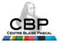

Avancées des outils numériques et leurs applications dans différents domaines scientifiques¶
Coordination : Cerasela Calugaru
Pour renforcer les échanges au sein de la communauté numérique lyonnaise et développer des nouveaux liens, nous avons proposé pour l’année 2014 l’organisation des colloques CBP sous un nouveau format qui consiste en une série de séances organisées en collaboration avec les laboratoires de recherche de l’ENS de Lyon. Chaque séance aborde un outil numérique (algorithme ou schéma numérique, technique de programmation, etc.) appliqué au domaine concerné mais qui pourrait avoir des applications dans d’autres domaines scientifiques. En s’appuyant sur des services existants au CBP (communication, logistique, soutien administratif), ces colloques permettent de rassembler des chercheurs des différents horizons scientifiques qui ont en commun l’intérêt pour les sciences numériques. Ces rencontres donnent également la possibilité aux chercheurs des divers laboratoires de mieux connaitre le support en calcul scientifique, les moyens informatiques et les autres services dont ils peuvent bénéficier au CBP. Le projet est en cours de déroulement ayant été très bien reçu par la communauté.
Public visé : Chercheurs, ingénieurs, étudiants des laboratoires de recherche lyonnais
« Using Density Functional Theory to model photophysical properties of molecular compounds: some insights » - 31 Janvier 2014 (organisée conjointement avec le Laboratoire de Chimie)
« The behavior of iron and iron-bearing minerals in the Earth » - 10 Février 2014 (organisée conjointement avec le LGL-TPE)
« Mouvement à long terme dans le Système Solaire » - 24 Mars 2014 (organisée conjointement avec le Laboratoire de Physique)
« Turbulence in Galaxy Clusters: Statistical Properties and Physical Implications » - 15 Avril 2014 (organisée conjointement avec le CRAL)
« Differentiation control in the Shoot Apical Meristem, an inside out model » - 28 Mai 2014 (organisée conjointement avec les LJC)
« Order from Chaos - The Solar Cycle » - 23 Juin 2014 (organisée conjointement avec le Laboratoire de Physique)
« Pushing the Frontiers of Ab Initio Kinetic Simulations in Heterogeneous Catalysis » - 24 octobre 2014 (organisée conjointement avec le Laboratoire de Chimie)
« Towards population studies in embryogenesis: a cell-to-cell mapping method for ascidian embryos » - 6 novembre 2014 (organisée conjointement avec le Laboratoires Joliot-Curie)
« What’s new under the Sun? » - 26 janvier 2015 (organisée conjointement avec le Laboratoire de Physique)
« Gysela5D, Adapting a GYrokinetic SEmi-LAgrangian code for current architectures and towards Exascale » - 24 février 2015 (organisée conjointement avec le Laboratoire de l’Informatique du Parallélisme)
« Convection à petite échelle et efficacité du mélange convectif dans le manteau Terrestre » - 16 mars 2015 (organisée conjointement avec le Laboratoire de Géologie de Lyon - Terre, Planètes, Environnement)
« Temporal motifs in time-dependent networks » - 30 avril 2015 (organisée conjointement avec le Laboratoire de Reproduction et Développement des plantes)
« Analyse Hautes Fréquences des Ondes avec Potentiel: Contrôle et Reconstruction de Données » - 26 mai 2015, à 14h (organisée conjointement avec le UMPA de l’ENS de Lyon)
« Ecoulements viscoplastiques peu profonds multi-regimes geophysiques: derivation de modeles et inversion numerique de proprietes basales » - 26 mai 2015, 15h15 (organisée conjointement avec le UMPA de l’ENS de Lyon)
« Introduction aux pérovskites hybrides : aspects théoriques, applications photovoltaïques et optoélectroniques » - 19 juin 2015 (organisée conjointement avec le Laboratoire de Chimie)
« Towards Climate-Dependent Sub-Grid-Scale Parameterizations in Atmospheric Models » - 12 octobre 2015 2015 (organisée conjointement avec le Laboratoires de Physique)
« Modelling a Multienzymatic Complex : Theoretical Strategies » - 30 octobre 2015 (organisée conjointement avec le Laboratoire de Chimie)
« New wine into old wineskins: collisionless shocks in plasmas » - 11 décembre 2015 (organisée conjointement avec le CRAL)
« Vers une sociolinguistique computationnelle : l’explosion des données numériques au service des sciences du langage » - 25 mars 2016 (organisée conjointement avec l’Atelier des Humanités Numériques)
« Heat transport and thermal structure of the Earth’s core » - 11 avril 2016 (organisée conjointement avec le Laboratoire de géologie de Lyon : Terre, Planète, Environnement)